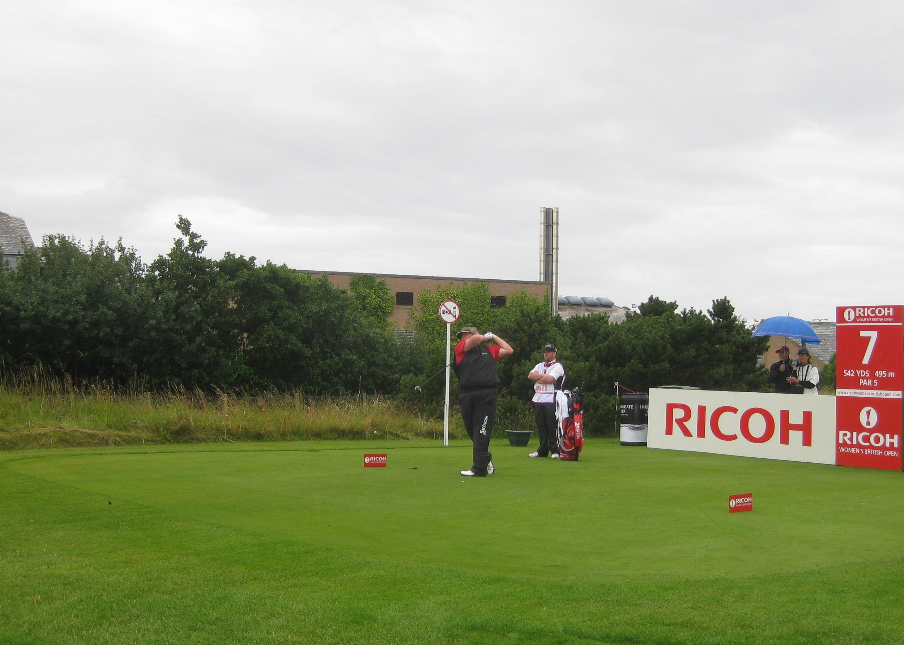
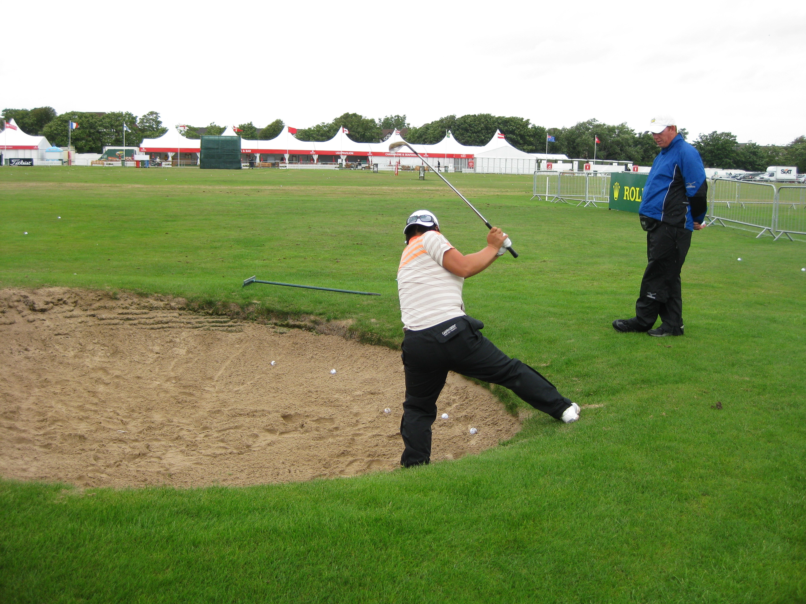

|
|
|
Women's British Open - Tuesday July 28th - Pro Am
The journey to Lytham St Annes was great, taking about an hour. As I drove towards the public parking the rain started and the weather looked very threatening. I put on both my fleeces and my cagoule, and wandered onto the course to see who was playing in the Pro Am. Anna Nordqvist was playing the 13th but they had another pro Marianne Skarpnord, the Norwegian in their group. Wandered over to the area between the sixth green and seventh tee. Waterproof trousers had to be donned as the rain was getting heavier. Saw Brittany Lincicombe teeing off on the seventh. Next up on the 6th was Cristie Kerr's group. One of the amateur caddies was obviously a friend and not a regular. He was desperately trying to keep dry by wearing a towel on his head. Black rainwear seems to be the colour of choice. One of the guys in Kerr's group played a fantastic bunker shot and she was very congratulatory. Karrie Webb was an exception to the all black rule having a cream section to her jacket. Natalie Gulbis was next and it was back to all black. One of the guys in her group was a nightmare. I was standing alongside him on the 7th tee and when he finished his swing he was facing me!! The ball went about 50 yards into the right rough nowhere near the start of the fairway. A long day in store for Natalie.
{kind=link}
Tutta was along next, and was getting along great with her group. As they went past me over to the 7th tee one of her playing partners did a double take. I didn't think I looked that stupid. It became obvious that he, Tutta and one of the others in the group were talking about me on the tee. Eventually, one of them wandered over to me and said "My friend says he thinks he saw you at Evian last week". I confirmed that I was there, and he wanted to know if I went to all the tour events. I had to explain that it was just the two weeks in Europe. He wanted to know my favourite player. I told him I was really an Annika fan but quite liked Tutta as well.
After he hit an awful tee shot (and shouted something obviously rude in a foreign language) Tutta took him to one side and gave him a detailed technical swing lesson. He hit another tee shot and this time is was a thing of beauty. Laura Diaz had a wooly hat over her baseball cap and seemed to be enjoying herself with her pro am partners. Morgan Pressel was having a ball with her lot. I think they were all Americans and they were talking US sport. I think they were talking about NHL ice hockey and the recent Stanley Cup finals. One of them told me that the course was winning and the only thing to do was have a cigar. He proceeded to light up a huge Cuban.
Karen Stupples broke the all black rule by wearing a red rain jacket. As she passed me on the way to the 7th tee she recognized me, said "Hi",and asked if we had had a good journey back from Evian. Bobby (caddie/hubby) also recognized me, looked surprised to see me out there in the rain and said "Are you crazy?" I confirmed that I was! Momoko Ueda completely broke the all black rule by wearing salmon pink top and bottom. Terry nodded in acknowledgment of my presence. Kent Nilsson was cheating. He was pushing the bag on a cart. He looked cold, wet and a little weary. Alfie got a lovely birdie which was just as well as the other ladies playing with her were really struggling. One of them narrowly missed me by hitting way right from 15 yards away.
As usual, LD seemed to be enduring rather than enjoying her Pro Am round. She was walking way ahead of her playing partners. She made a very casual birdie on 6 and wandered off to the 7th tee. She did her usual thing getting an iron out to dig up a lump of tee on which to put her tee ball. The group in front was holding her up, so she started trying to tennis serve a golf ball using her driver. Thank God the train wasnt coming when she finally made contact and sent the ball sailing across the railway line.
 Wandered in towards the clubhouse. Caught up with Lorena waiting to tee off on the 18th. She was sporting blue rainwear. Back at the practice ground bought myself a bacon roll and sat in the grandstand at the driving range to eat it. Xtina Kim was practising next to Soph and chatting away as usual. ShanShan Feng looked a tad silly as she was not only dressed head to toe in orange but was hitting on the range with her hood up. Wandered over to the grandstand by the 1st tee where there were a load of golfers waiting to tee off. Vicky Hurst was there along with her Mum who is supposed to be as bad as the Wie's. She was tossing grass into the air to test the wind and took the yardage book to point out something to the caddie who was feigning interest. She has in the past spent time pointing out where not to hit it which doesn't engender positive thoughts.
{kind=link}
At the chipping green, I found Xtina Kim in one of the pot bunkers. She seemed to be, as she said herself, "digging to make sandcastles". She was laughing all the time as she and her caddie were trying to come up with the most difficult spot in the bunker. The putting green was now crowded, and saw Portland John standing by the caddie master area. I welcomed him to the lovely weather at the British, and he pointed out that coming from Portland he was used to weather. He said he'd told his bag, Soo Yun Kang, to get all her practicing in today because Wednesday was going to be dreadful. They had played with Ai Miyazato who played 9 holes being constantly followed and interviewd by a Japanese TV crew. Once they disappeared she apparently played really well. Whilst watching Xtina chatting with all and sundry rather than putting on the putting green, the heavens absolutely opened. Decided it was time to make the trip back back out to the car.